Elektrisch op twee wielen, van fatbike tot crossmotor.
Bike Centre Holland is showroom en werkplaats in één, aan de Stadhoudersmolenweg in Apeldoorn. Je vindt hier Veloretti e-bikes, Phatfour fatbikes, Talaria crossers en Zero Motorcycles. Proefrijden kan, en onderhoud doen we zelf.
Open dinsdag tot en met zaterdag, 10:00 tot 17:00.
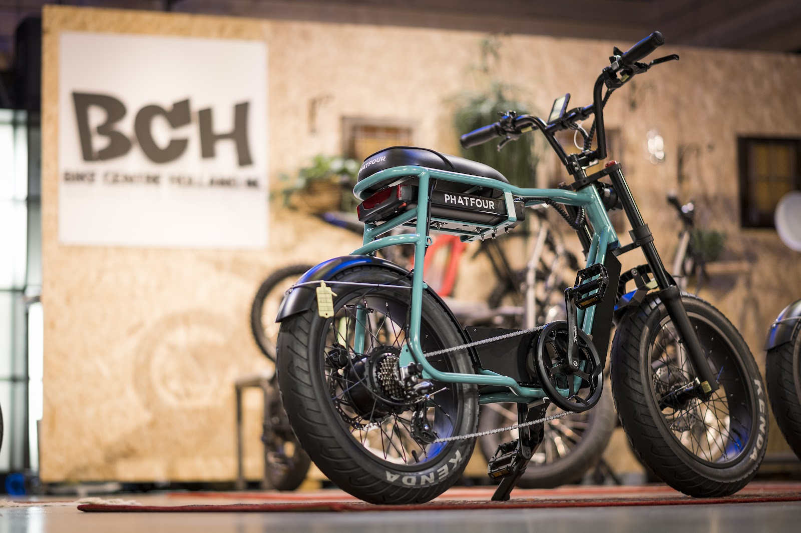
Van trappen tot gas geven.
Dit staat nu bij ons, op volgorde van vermogen. Van een e-bike voor de stad tot een elektrische motor op A1-rijbewijs. Twijfel je tussen twee modellen? Kom langs en maak een proefrit.
-
Trapondersteuning
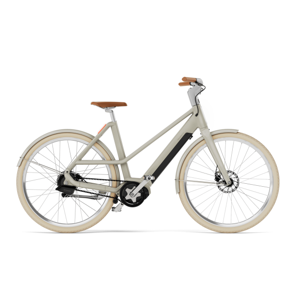
Veloretti Electric Ivy Two
E-bike. Gates Carbon Beltdrive, Enviolo naafversnelling, 2 jaar garantie.
€2.599 tot €3.399
-
7,5 kW
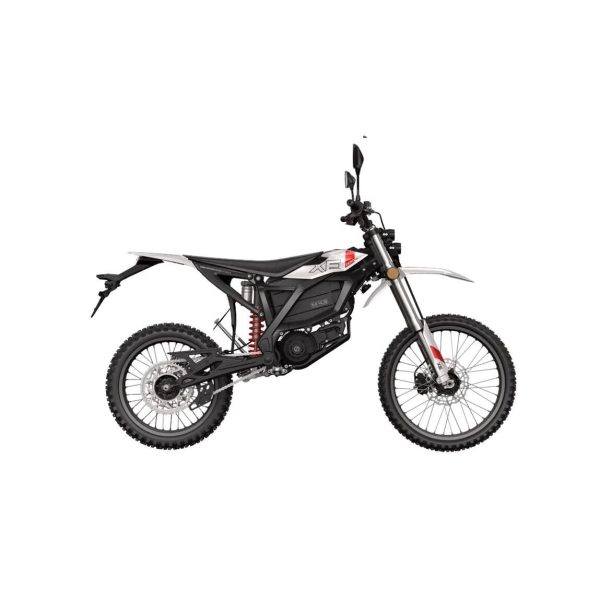
Zero Motorcycles XB
Elektrische bromfiets. 10 pk, range tot 75 km, twee jaar garantie.
€4.680
-
13,4 kW piek
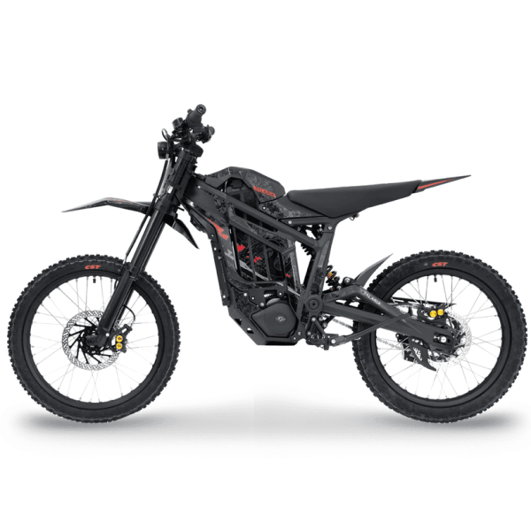
Talaria Sting MX5 PRO
Leverbaar op bromfietskenteken. 72V 40Ah, licht en wendbaar in het bos.
€5.490 tot €5.590 of vanaf €99 per maand
-
15,5 kW
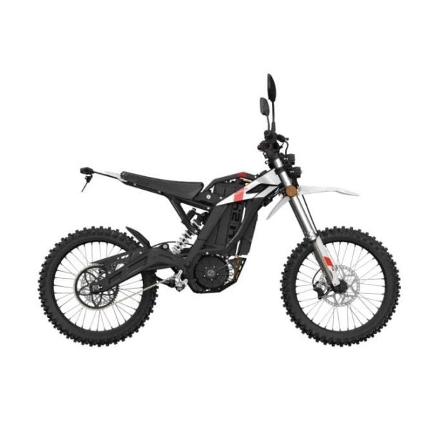
Zero Motorcycles XE
Elektrische motorfiets, A1. 20,1 pk, 58 Nm koppel, 2 jaar garantie.
€6.915
-
32 kW piek
105 km/u topsnelheid
115 km range
Talaria Komodo
De zwaarste uit het rijtje: een volwaardige elektrische crossmotor.
Vanaf €6.990
Kom kijken, en rij er een rondje op.
In onze showroom staan e-bikes, fatbikes, scooters, crossers en motoren naast elkaar. Nieuw en gebruikt. We nemen de tijd voor advies over modellen, specificaties en een proefrit, zodat je naar huis gaat met wat bij je wensen en budget past.
- Veloretti
- Stijlvolle e-bikes met middenmotor, voor de stad en langere ritten. Wij zijn officieel dealer en servicepunt, ook voor garantie.
- Phatfour
- Robuuste fatbikes met een stoer ontwerp, van stadsrit tot onverhard.
- Talaria
- Elektrische offroad motoren: snel, wendbaar en stil het terrein in.
- Zero Motorcycles
- Elektrische motoren met direct koppel, van sportief tot adventure.
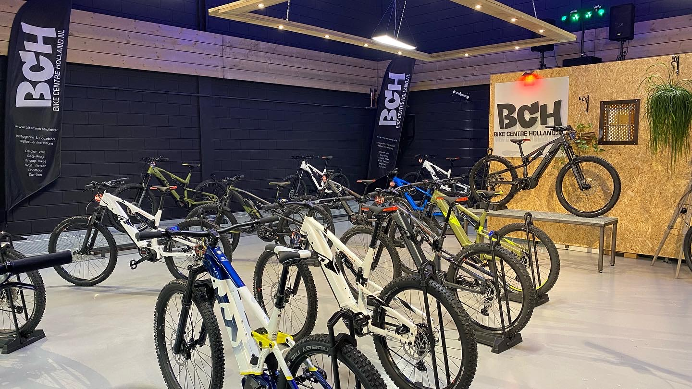
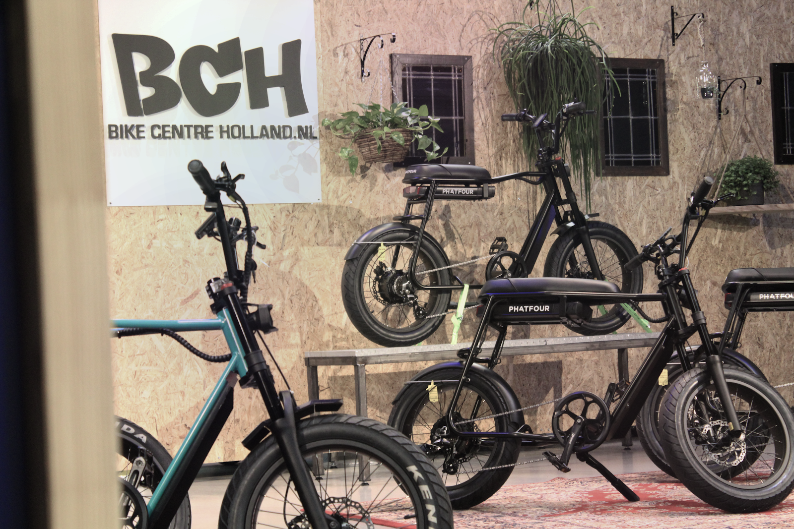
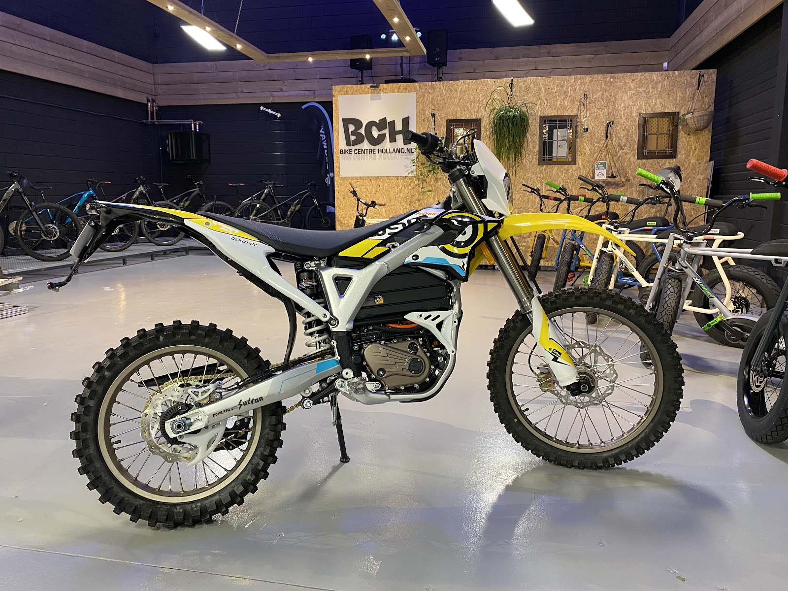
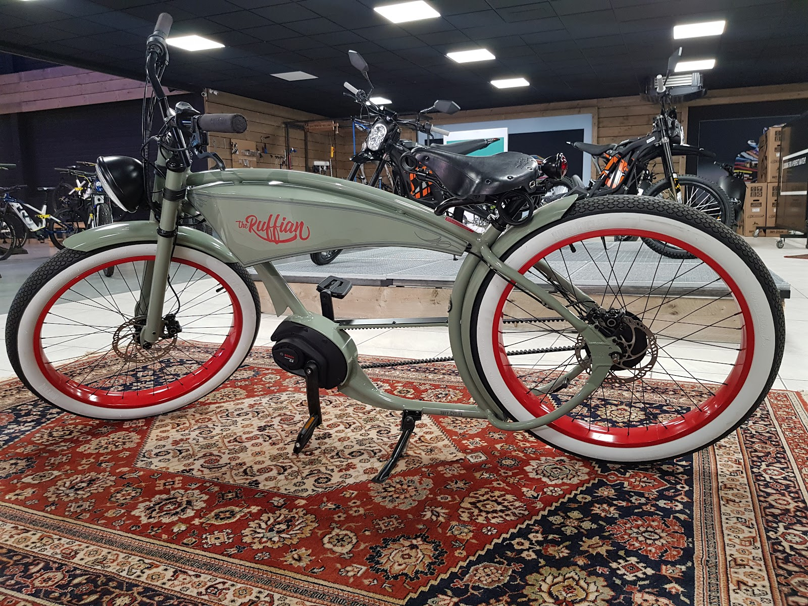
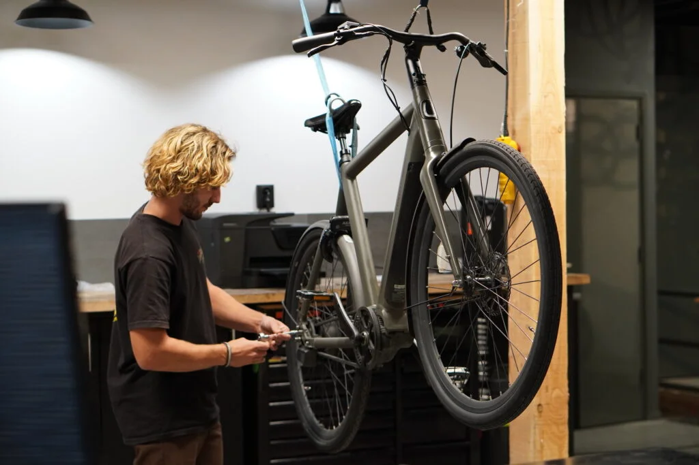
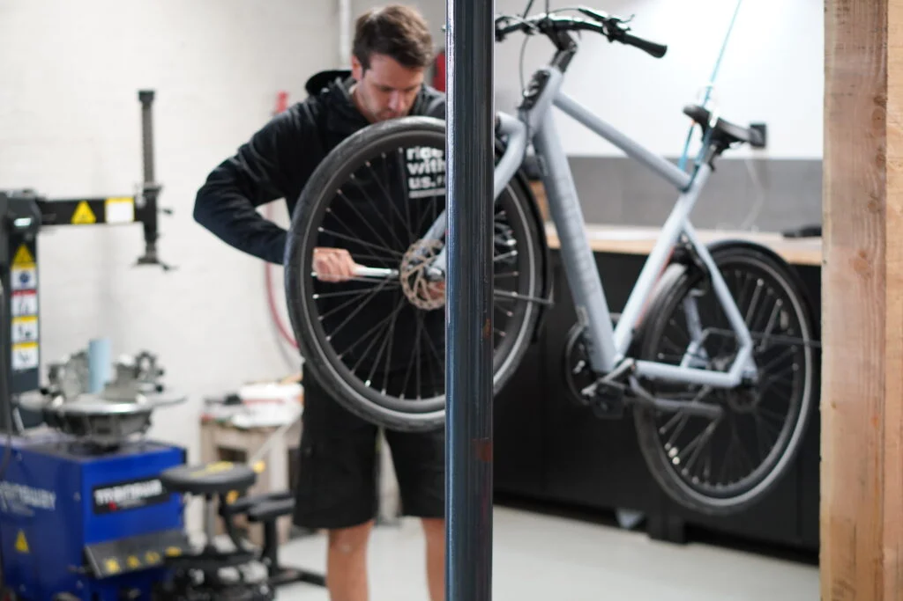
Onze eigen werkplaats.
Reparatie en onderhoud aan alle merken motoren, scooters, e-bikes en fatbikes. Ook als je fiets niet bij ons gekocht is. We werken altijd met hoogwaardige onderdelen.
Nieuw: haal- en brengservice
Geen tijd om langs te komen? Binnen de regio Apeldoorn halen we je motor, scooter of (fat)bike thuis of op je werk op, en brengen hem na de reparatie of onderhoudsbeurt terug.
Plan een ophaalafspraakReparatie
Van een vastgelopen rem of software-update tot een complexe revisie of schade na een ongeluk.
Onderhoud
Kleine en grote beurten: inspectie, vloeistoffen en filters, ketting en remmen afstellen.
"Zeer goede service! Personeel is aardig en behulpzaam. De remblokken van m'n motor waren vastgelopen en de reparatie bleek vele malen complexer dan verwacht. In plaats van een half uurtje kostte het 3 uur tijd om te repareren. Ik vreesde voor een flinke rekening maar ik kreeg alleen de rekening zoals van tevoren verwac..."
"Wat een fantastische service. De eigenaar heeft zeker verstand van zaken. Hij heeft de software geüpdatet en de fiets deed het weer. Wij komen hier zeker weer terug."
Wat klanten zeggen.
4,2 gemiddeld uit 100 Google-reviews
"Ik heb bij BCH mijn Phatfour FLX gekocht, alles verliep soepel. Ik heb eerst een uitgebreide proefrit gemaakt om tot de juiste beslissing te komen. Als accessoire heb ik er een slot-bak bij gekocht, zodat je slot en eventuele kleine boodschappen makkelijk kunt mee nemen. Het verkoopproces is snel en soepel verlopen..."
"Hele aardige en meedenkende mensen. Kwam hier voor remblokjes voor een fatbike en ben prima geholpen. Waar andere fietsenmakers het spoor bijster waren, heb ik hier eindelijk de juiste remblokken kunnen kopen."
"Fietsen maar dan net anders . Mooie collectie en goede advies . Eigen service en onderhoud. Ze hebben ook elektrische scooters en elektrische crosscoters . Zeker een aanrader voor die wat anders zoekt dan een standaard fiets ."
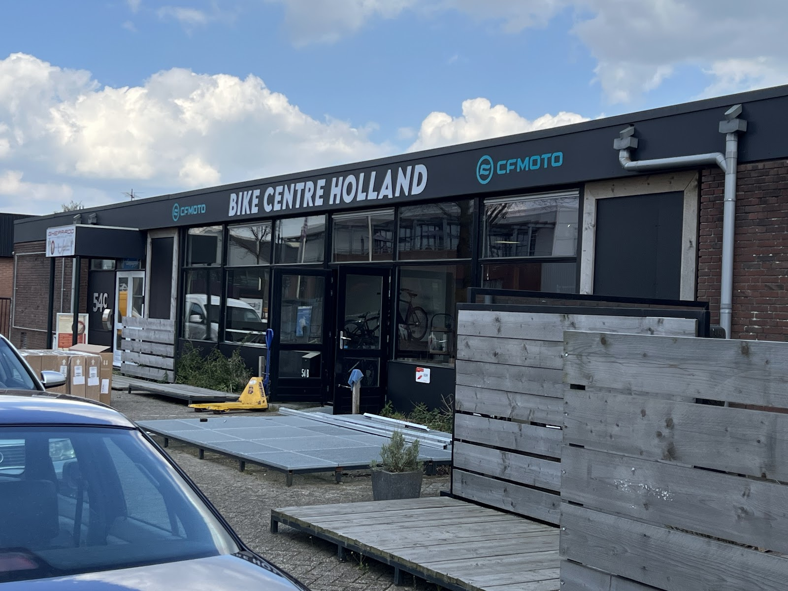
Langskomen in Apeldoorn.
Stadhoudersmolenweg 54-B7317 AX Apeldoorn
Openingstijden
| Maandag | Gesloten |
| Dinsdag | 10:00 tot 17:00 |
| Woensdag | 10:00 tot 17:00 |
| Donderdag | 10:00 tot 17:00 |
| Vrijdag | 10:00 tot 17:00 |
| Zaterdag | 10:00 tot 17:00 |
| Zondag | Gesloten |